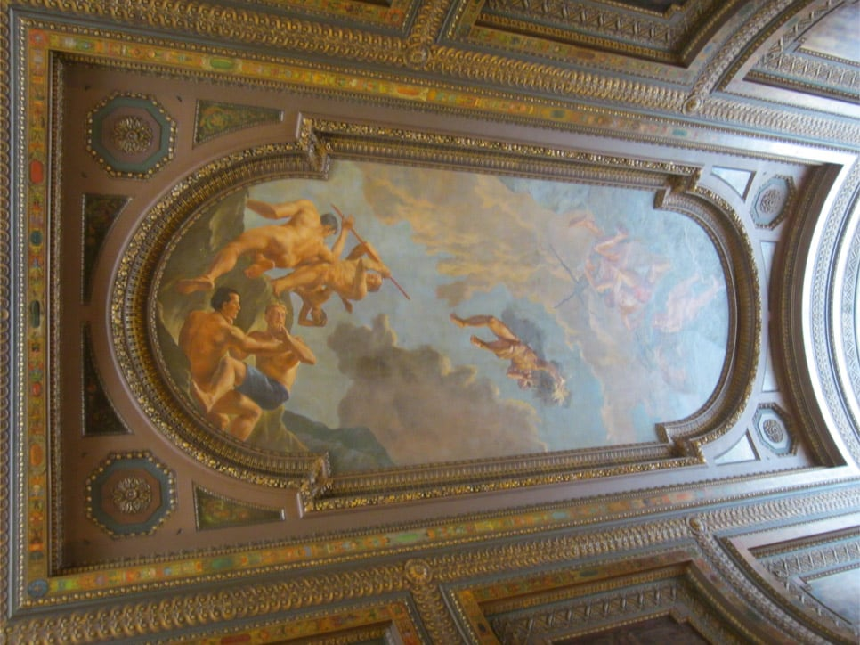

Journal Entry 11/6
Frank Chimero
- “there is so much convenience, but so little comfort. Everyone is tired. Our attention is over-extended, over-stimulated, and over-commodified, making us twitchy, unfocused, and, in a very crude sense, afraid.”
Every time we have a reading it feels so current and relevant and yet this was written in 2018 about 7 years ago. So strange how that works and how we've been in this state longer than we think we have.
- Loving the meta selfie of him in the room he does his work in.
- I wish libraries were used more frequently. It’s such a great 3rd space and yet after college campus (and even on sometimes) they're not used to their full potential as a meeting place. Especially with such a recent emphasis on people wanting 3rd spaces they don't have to spend money on, the library is very overlooked.
- “The compatibility between a company’s needs and the public’s needs may only be temporary. This seems to be the case with social media companies, where, right now, what they need and what’s good for society seem to be in conflict.”
- “It says that trust in social media is quickly eroding worldwide, because social and search platforms like Facebook and Google are no longer seen as technology, but as part of an untrusted media institution—and the least trusted part of the media at that. 63% of people say they can’t tell the difference between good journalism and falsehoods.”
This feels like the opposite now, that people frequently and consistently trust social media when they also know it is unreliable. They both know it is full of misinformation and yet continue to believe it and trust in it.
- So curious if “yes to instagram” remains valid in 2025.
